| Minéral (%) |
A | B | C | D | E | F | G | H | I |
|---|---|---|---|---|---|---|---|---|---|
| Q · Quartz | 35 | 45 | 55 | 10 | 0 | 0 | 0 | 0 | 0 |
| A · Feldspath alcalin | 61 | 38.5 | 4.5 | 30 | 55 | 15 | 85 | 20 | 4 |
| P · Plagioclase | 4 | 16.5 | 40.5 | 60 | 15 | 55 | 10 | 5 | 1 |
| F · Feldspathoïde | 0 | 0 | 0 | 0 | 30 | 30 | 5 | 75 | 95 |
| Total | 100 | 100 | 100 | 100 | 100 | 100 | 100 | 100 | 100 |
Séance 2 - Les roches magmatiques I : pétrographie et classification
Simon THIVET
Plan du cours
| Temps | Contenu | Objectif |
|---|---|---|
| 0-40 min | Les différentes textures des roches magmatiques | Décrire une roche magmatique avec des critères explicites |
| 40-45 min | Questions générales | |
| 45-60 min | Pause | |
| 60-100 min | Les différents systèmes de classification des roches magmatiques | Nommer une roche magmatique selon sa composition minéralogique et chimique |
| 100-105 min | Questions générales |
Rappel sur les trois échelles d’analyse
Observer une roche à plusieurs échelles et comprendre son histoire
Cela nécessite l’utilisation de plusieurs outils et connaissances.
Échelle globale à locale : terrain
- Échelle : km → m
- Connaissance du contexte géologique
- Contextualisation et analyse de l’affleurement
Échelle macroscopique : échantillon
- Échelle : m → mm
- Analyse des composants
- Caractérisation de la nature des échantillons : couleur, texture, forme, structure, minéralogie…
Échelle micro- à nanométrique : laboratoire
- Échelle : mm → µm voire nm
- Préparation des échantillons
- Analyses pétrographiques (microscopie) et géochimiques (spectroscopie)
Même roche, trois regards : Où affleure-t-elle ? Comment est-elle faite ? De quoi est-elle composée ?
On change d’échelle, mais on étudie toujours la même histoire géologique.
Rappel sur les familles de roches magmatiques
Roches mantelliques
- Sources ou résidus de fusion
- Roches ultramafiques avec des cristaux visibles à l’œil nu
- Information directe sur le manteau
Péridotite en enclave
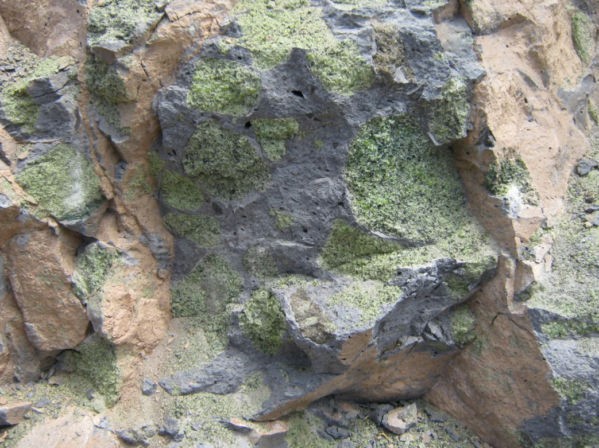
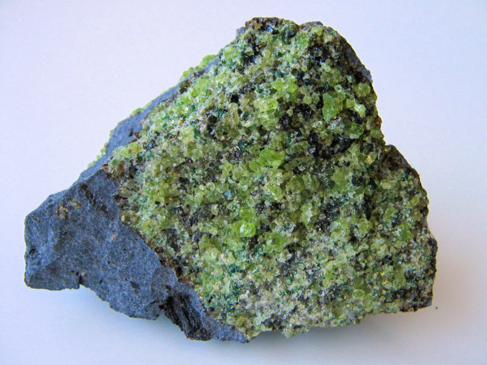

San Carlos volcanic field, Arizona (USA), près de Peridot
Roches plutoniques
- Cristallisation lente en profondeur
- Cristaux visibles à l’œil nu
- Information directe sur la nature de la formation du socle crustal
Granite
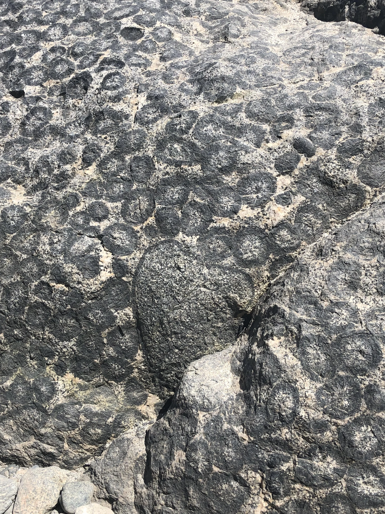
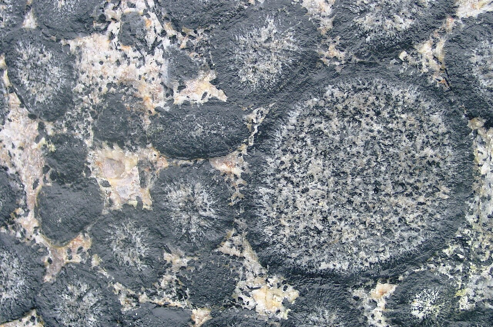

Granites orbiculaires, Ruskiavuori (Finlande)
Roches volcaniques
- Refroidissement rapide en surface
- Cristaux moins visibles à l’œil nu et vésicules
- Information directe sur les volcans
Basalte
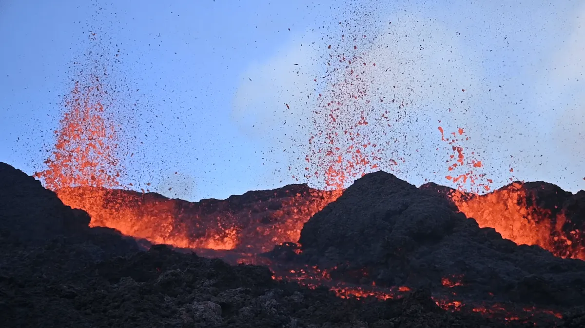
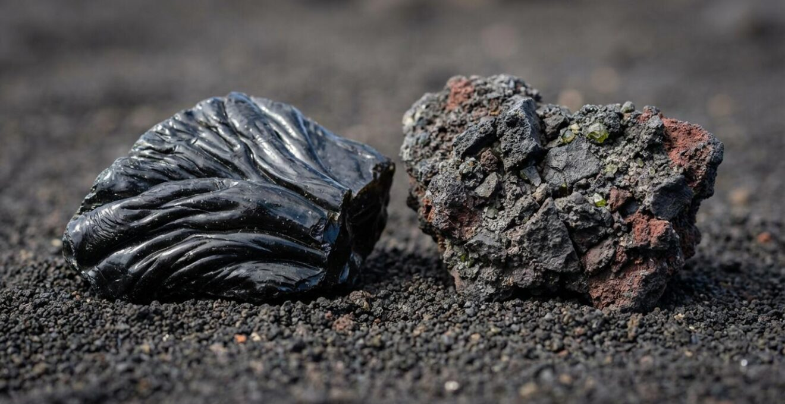
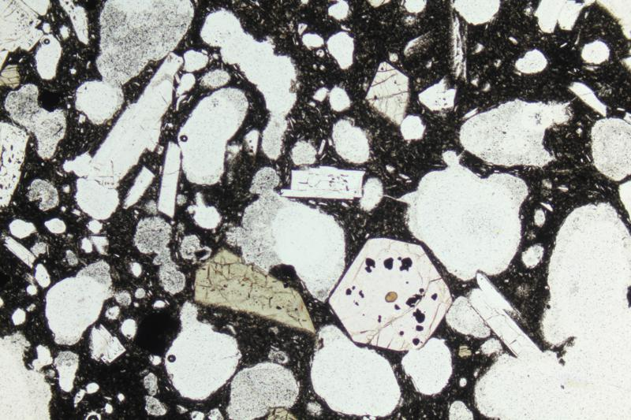
Piton de La Fournaise, La Réunion (France)
Les roches mantelliques ne sont pas toujours le produit direct de la solidification d’un magma au sens strict : elles peuvent représenter des sources, des résidus de fusion ou des cumulats. Pour le cours, elles doivent cependant entrer très tôt dans le vocabulaire, car elles sont essentielles pour discuter la naissance des magmas.
Observer un affleurement
L’affleurement donne le contexte naturel de la roche
On cherche d’abord : le contexte géologique, la géométrie du corps rocheux, les contacts avec les roches voisines, les variations latérales ou verticales, les indices de mise en place des roches, …
| Question | Pourquoi c’est important |
|---|---|
| Où suis-je dans l’affleurement ? | éviter l’échantillon sans contexte |
| La roche est-elle fraîche ? | limiter les effets d’altération |
| Quelle relation avec les autres roches ? | reconstruire une chronologie relative |
| Quel échantillon est représentatif ? | ne pas généraliser à partir d’un cas isolé |
- Un échantillon isolé est beaucoup moins informatif qu’un échantillon replacé dans son contexte.
- L’identification de terrain est une hypothèse provisoire, qui sera testée par l’échantillon, la lame mince et éventuellement la chimie.
Quelques exemples d’affleurement : roches mantelliques
Ophiolite de l’Oman
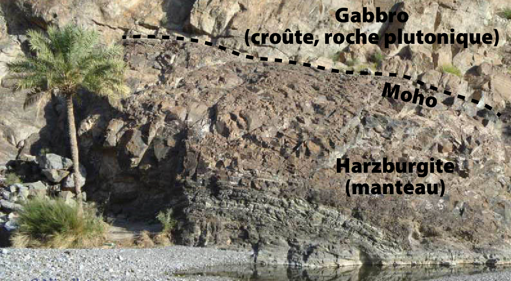
Ce type d’affleurement, présent dans des endroits limités sur Terre, donne accès à des matériaux mis en place à de grandes profondeurs. Ces roches mantelliques sont progressivement exhumées par des processus tectoniques comme l’obduction, ou par le volcanisme qui fait remonter des matériaux profonds lors des éruptions.
Quelques exemples d’affleurement : roches plutoniques
Intrusion plutonique en Corse
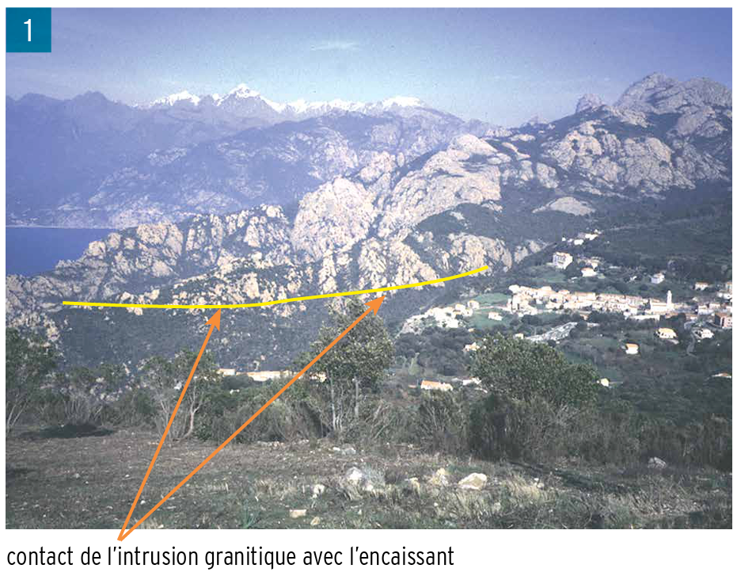
Ces affleurements, régulièrement présents sur la croûte continentale, donnent accès à des matériaux crustaux mis en place en profondeur. Ces roches plutoniques sont progressivement exhumées par des processus érosifs et tectoniques comme la collision continentale. Ces roches informent sur la cristallisation des magmas en profondeur.
Quelques exemples d’affleurement : roches volcaniques
Empilement de coulées de lave à Madère
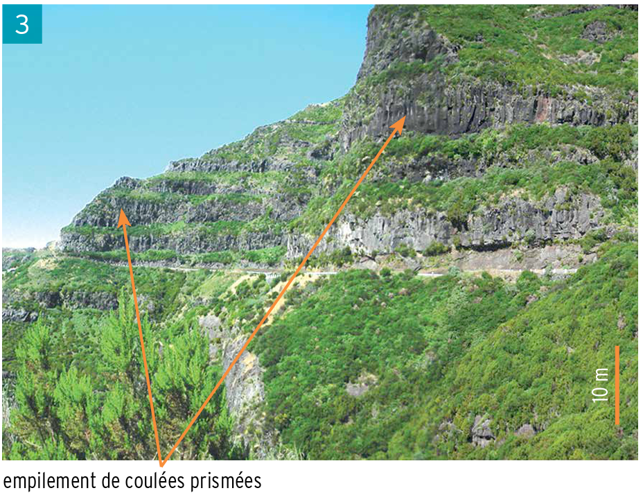
Ces affleurements, régulièrement présents dans les zones volcaniques, que ce soit en domaine continental ou océanique, montrent des matériaux directement mis en place en surface. Ces roches informent sur le volcanisme et la solidification des magmas en surface.
Observer un échantillon au niveau macroscopique
L’observation macroscopique d’un échantillon permet une description plus précise de la roche étudiée
On décrit d’abord : couleur générale (roche leucocrate claire ou mélanocrate sombre), texture granulométrique, texture cristalline, texture vésiculaire, altération, hétérogénéités, …
Une roche mal décrite peut entraîner une mauvaise interprétation de son histoire. Il faut donc décrire méthodiquement une roche, la comparer avec d’autres si possible, avant de pouvoir la classer, l’interpréter et la nommer.
Quelques exemples d’échantillons : roches mantelliques
Les péridotites
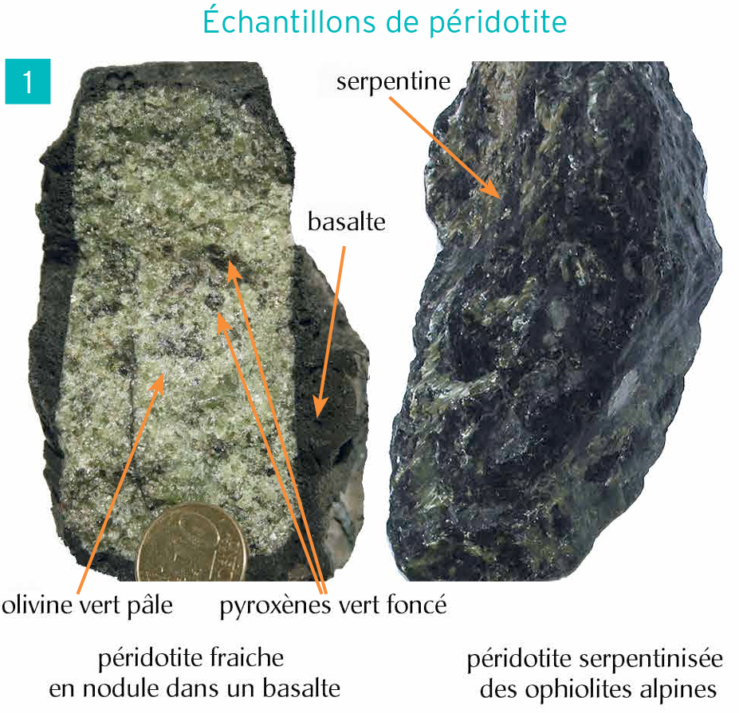
Ces exemples illustrent deux histoires de roches mantelliques : en inclusion dans un basalte, un fragment de péridotite est transporté vers la surface par le magma ; dans les Alpes, une péridotite a été métamorphisée lors de la collision alpine.
Quelques exemples d’échantillons : roches plutoniques
Les granites
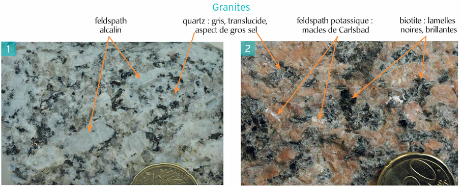
Formées en profondeur, ces roches refroidissent lentement. Les minéraux ont le temps de cristalliser et sont visibles à l’œil nu : ils s’emboîtent les uns dans les autres et donnent une texture grenue, comme dans ce granite.
- Les roches plutoniques sont entièrement cristallisées, sans pâte vitreuse.
- Les cristaux peuvent avoir des tailles et habitus différents.
- Leurs natures et leurs proportions varient selon la composition chimique du magma.
Quelques exemples d’échantillons : roches volcaniques
Les basaltes
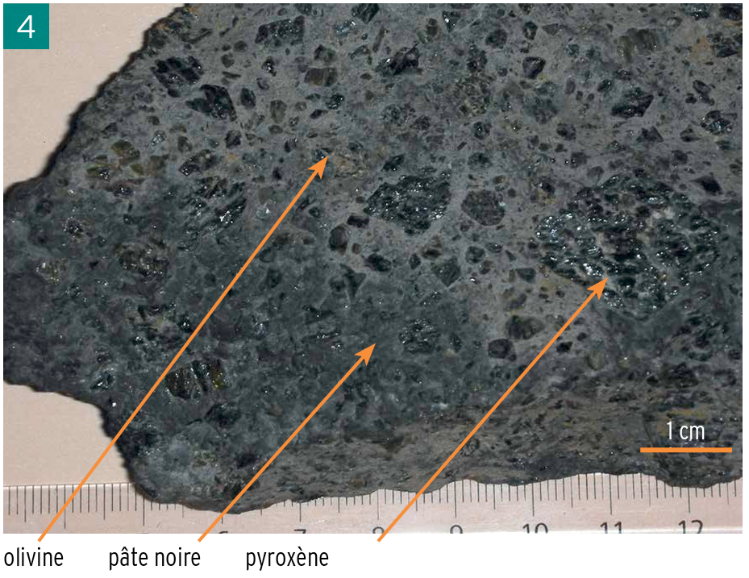
Les roches volcaniques refroidissent relativement rapidement en surface : la pâte est souvent très fine ou vitreuse. Dans une texture porphyrique comme celle de ce basalte, de gros cristaux formés plus tôt en profondeur sont visibles dans cette pâte (ou matrice) fine.
Analyser un échantillon au niveau microscopique et géochimique
L’analyse de l’échantillon en laboratoire donne accès à ce qui est invisible à l’œil nu
On peut utiliser des techniques de microscopie pour étudier en détail la pétrographie de la roche et des techniques de spectroscopie pour étudier la composition chimique de la roche et de ses constituants.
On peut notamment identifier des minéraux non visibles à l’œil nu pour reconstituer l’ordre relatif de cristallisation, des zonations géochimiques traduisant des variations de conditions P-T-X, …
Quelques exemples d’analyses microscopiques : roches mantelliques
Les péridotites
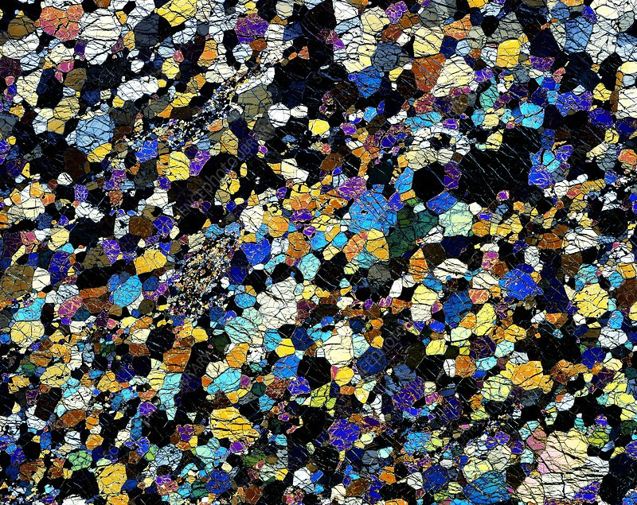
Dans une péridotite, l’olivine et les pyroxènes forment une mosaïque de cristaux jointifs. Les roches du manteau se déforment à l’état solide : les grains peuvent s’orienter, s’étirer, se fragmenter ou recristalliser. Leur taille, leur forme et leur orientation gardent ainsi la trace des mouvements profonds du manteau.
Quelques exemples d’analyses microscopiques : roches plutoniques
Les gabbros
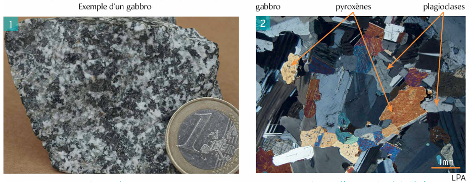
Le refroidissement lent en profondeur laisse le temps aux cristaux de grandir et de s’imbriquer : la roche présente une texture grenue. Dans ce gabbro, les cristaux de plagioclase et de pyroxène sont visibles et forment une roche entièrement cristallisée, sans matrice résiduelle vitreuse ou microlitique.
Quelques exemples d’analyses microscopiques : roches volcaniques
Les basaltes
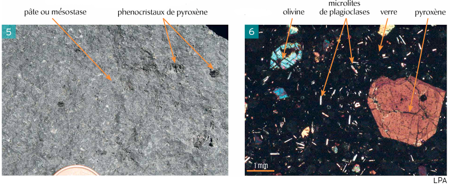
Le refroidissement rapide des roches volcaniques limite la croissance des cristaux : de petits microlites se forment dans une pâte parfois vitreuse. Des cristaux plus gros, les phénocristaux visibles ici, peuvent avoir commencé à cristalliser avant l’éruption en profondeur. La texture enregistre ainsi les différentes étapes du refroidissement du magma.
Mais alors, comment classifier toutes ces roches ?
Pour les roches en général, et en particulier les roches magmatiques, on identifie majoritairement trois types de classification :
- Textures de grains (roche massive vs. fragments)
- Textures cristallines (verre vs. cristaux de différentes tailles)
- Textures vésiculaires (dense vs. vésicules de différentes tailles)
Texture de grains (roche massive vs. fragments)
Fragments pyroclastiques
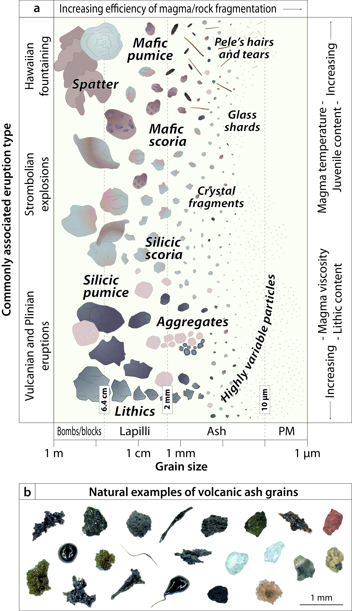
Taille et forme des fragments
Si les roches magmatiques ne sont pas sous l’aspect massif (des roches massives peuvent être par exemple des intrusions plutoniques et des coulées de lave), on parle de fragments et plus particulièrement de pyroclastes (ou téphras).
Les pyroclastes sont classés selon leur taille :
- Blocs et bombes : plus de 64 mm ;
- lapilli : de 2 à 64 mm ;
- cendres : moins de 2 mm.
Leur forme (anguleuse ou arrondie, équante ou allongée) et leur vésicularité font aussi partie de leur description, et permettent de leur donner un nom secondaire.
Textures cristallines (verre vs. cristaux)
La distribution de la taille des cristaux
Différents noms de textures cristallines existent pour décrire les roches magmatiques :
- Grenue
- Porphyrique
- microlitique
- vitreuse
Interprétation typique : histoire de cristallisation et rapidité de refroidissement.
Textures cristallines : texture grenue
Gabbro
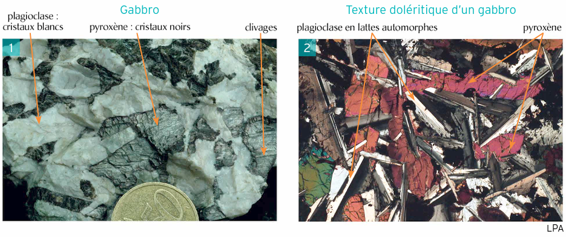
Texture grenue
Une texture grenue est une texture entièrement cristallisée, dans laquelle les cristaux sont visibles à l’œil nu et s’emboîtent les uns dans les autres, sans pâte vitreuse.
Elle traduit généralement le refroidissement lent d’un magma en profondeur : le temps disponible permet aux cristaux de nucléer, de grandir et de former une mosaïque de grains jointifs.
La taille, la forme et les proportions des cristaux renseignent sur les conditions de cristallisation. Cette texture caractérise surtout les roches plutoniques, comme les gabbros, les granites et les granodiorites, mais elle ne suffit pas à déterminer leur composition ou leur nom.
Textures cristallines : texture porphyrique
Andésite

Texture porphyrique
Une texture porphyrique est une texture caractérisée par la présence de grands cristaux (phénocristaux) bien visibles à l’œil nu, qui sont noyés dans une matrice beaucoup plus fine, formée de micro-cristaux ou de verre.
Elle traduit généralement un refroidissement en deux temps (ou polyphasé) d’un magma : une première phase de refroidissement lent en profondeur permettant la croissance des grands cristaux, suivie d’une seconde phase de refroidissement beaucoup plus rapide lors de la remontée ou de l’éruption du magma, figeant le reste du liquide sous forme de petits cristaux ou de verre.
Textures cristallines : texture aphyrique ou microlitique
Basalte
Cet exemple peut aussi être classifié comme une texture porphyrique, étant donné que l’on observe quelques phénocristaux à l’œil nu.
Texture microlitique
Une texture microlitique est une texture incomplètement cristallisée, caractérisée par une multitude de minuscules cristaux allongés en forme de baguettes (les microlites), invisibles à l’œil nu, qui sont noyés aux côtés d’éventuels grands cristaux dans une pâte vitreuse non cristallisée (le verre).
Elle traduit généralement le refroidissement très rapide d’un magma en surface, lors d’une éruption volcanique : la lave, entrée en contact brutal avec l’air ou l’eau, se fige si vite que les atomes n’ont pas le temps de s’organiser pour former de grands cristaux, bloquant une partie de la roche à l’état de verre.
Textures cristallines : texture vitreuse
Obsidienne
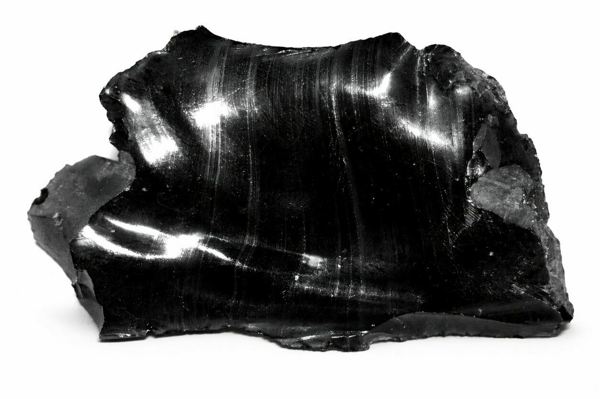
Texture vitreuse
Une texture vitreuse est une texture non cristallisée, entièrement ou quasi entièrement constituée de verre volcanique amorphe, dans laquelle aucun cristal (ou seulement de rares traces microscopiques) n’est visible, même au microscope.
Elle traduit généralement un refroidissement extrêmement brutal (ou « trempe ») d’un magma en surface, le plus souvent au contact direct de l’eau ou de l’air : la chute de température est si instantanée que les atomes sont figés dans le désordre le plus total, sans avoir eu le moindre temps pour s’organiser et nucléer des cristaux.
La haute viscosité de certains magmas peut aussi empêcher la cristallisation des atomes, c’est notamment le cas des obsidiennes.
Textures cristallines : textures particulières
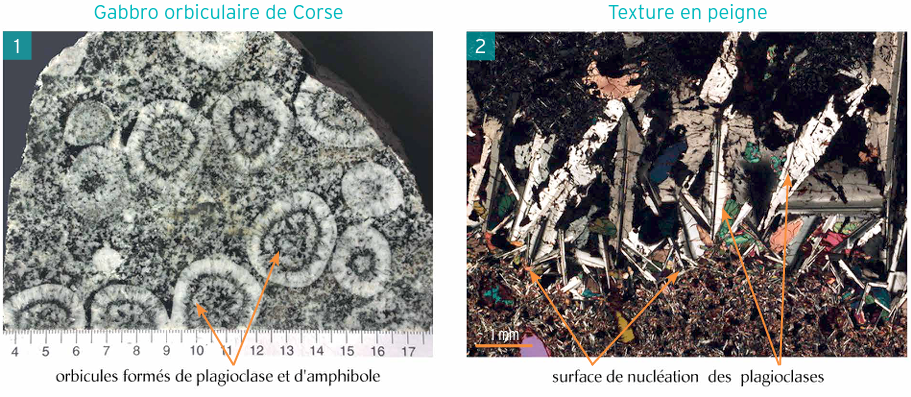
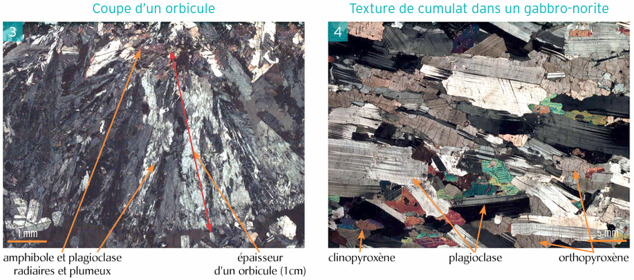
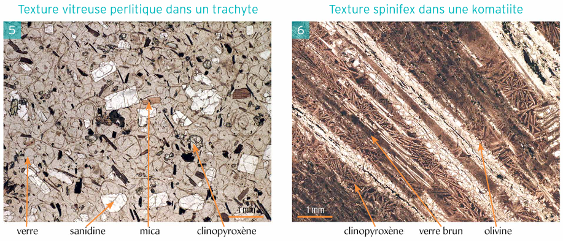
Textures vésiculaires (verre vs. vésicules)
La distribution de la taille des vésicules
Différents noms de textures vésiculaires existent pour décrire les roches magmatiques :
- Réticulite
- Ponce
- Scorie
- Dense
Interprétation typique : histoire de dégazage et rapidité de remontée magmatique. Cristallisation et dégazage sont intimement liés (Séances 6 et 11)
Textures vésiculaires : texture réticulaire
Réticulite
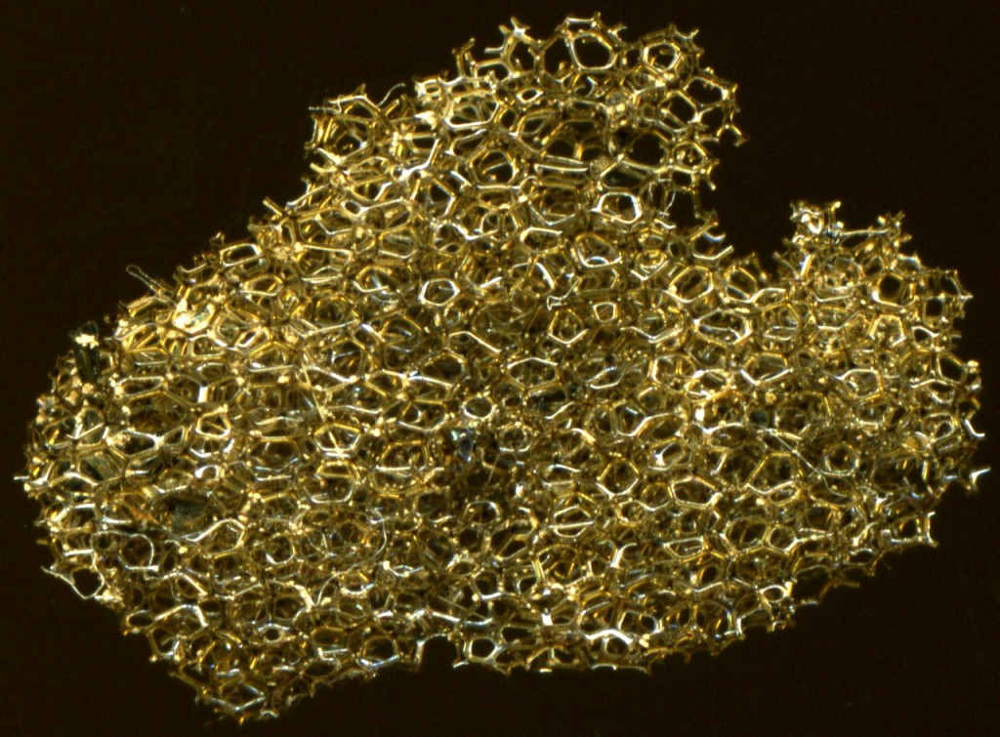
Texture réticulaire
Une texture réticulaire est une texture volcanique de type « mousse solide », caractérisée par des bulles si abondantes et dilatées qu’elles ont éclaté et fusionné, ne laissant qu’un réseau tridimensionnel de fins filaments de verre interconnectés.
Elle se forme généralement dans des pyroclastes basaltiques très fluides produits lors de fontaines de lave intenses. La décompression rapide entraîne une forte expansion des gaz juste avant la solidification du verre, créant une structure extrêmement poreuse et perméable. Cette texture, avec une porosité souvent supérieure à 95 %, est caractéristique de la réticulite.
Textures vésiculaires : texture ponceuse
Ponce
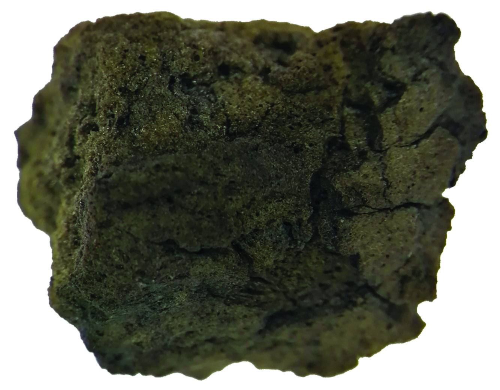
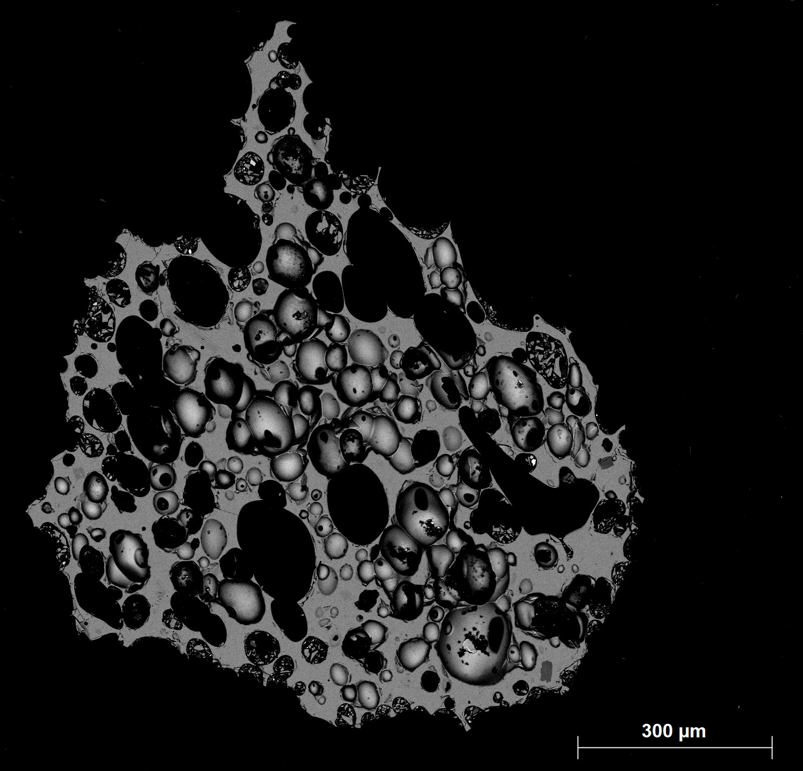
Texture ponceuse
Une texture ponceuse est une texture hautement vacuolaire, caractérisée par une multitude de petites cavités allongées ou sphériques, séparées par de minces parois de verre volcanique cloisonnées.
Elle traduit généralement un refroidissement très rapide en surface d’un magma visqueux et riche en gaz lors d’éruptions volcaniques explosives : la décompression brutale libère les gaz qui forment une mousse de lave silicatée, piégée instantanément sous forme de verre lors du contact avec l’air. La densité exceptionnellement basse de la roche, souvent inférieure à celle de l’eau (ce qui la fait flotter), renseigne sur le volume immense occupé par ces bulles de gaz fossiles, que l’on appelle vésicules.
Textures vésiculaires : texture scoriacée
Scorie
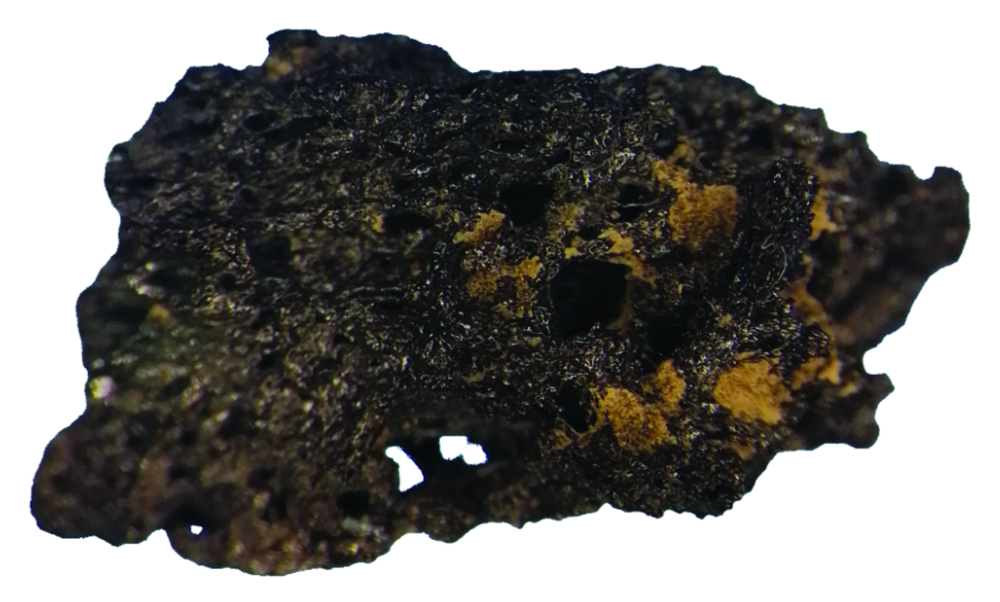
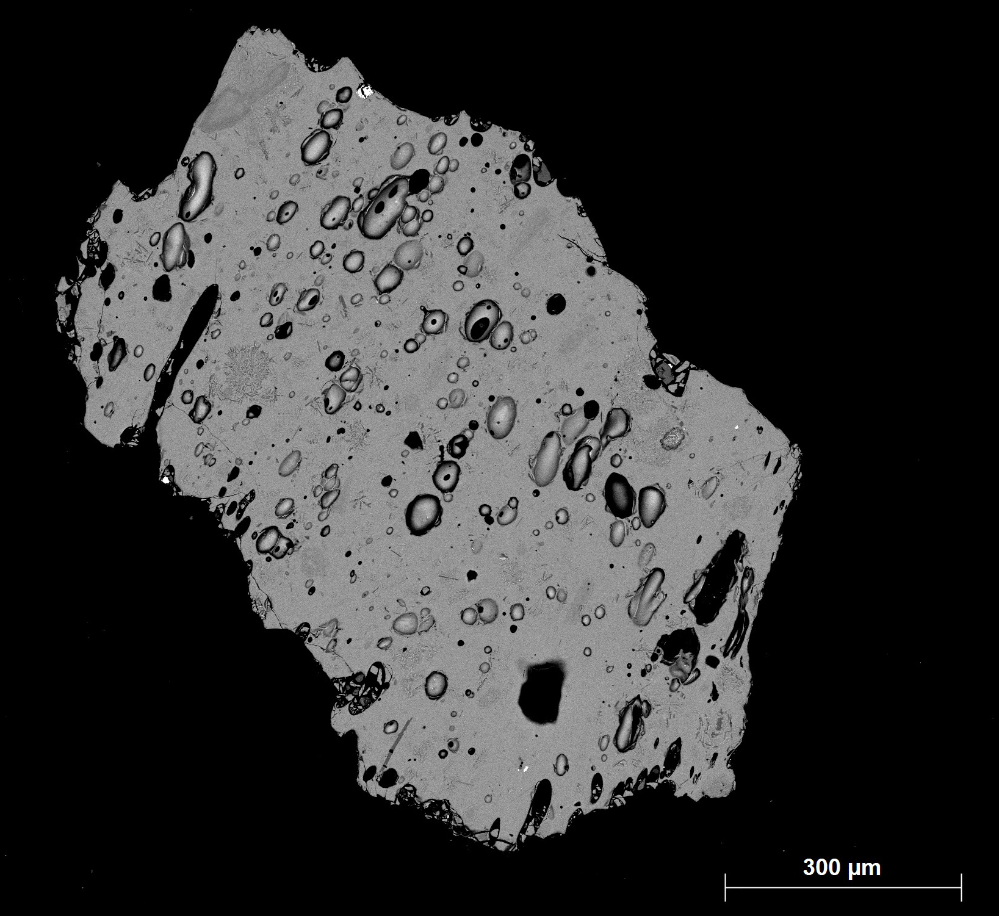
Texture scoriacée
Une texture scoriacée est une texture grossièrement vacuolaire, caractérisée par de grandes cavités irrégulières, déchiquetées et aux parois épaisses, formées de verre volcanique sombre et opaque qui intègre parfois de petits cristaux isolés.
Elle traduit généralement le refroidissement rapide en surface d’un magma plus ou moins fluide. Le magma originaire de ce type de texture a permis aux bulles de gaz de grossir, de se déformer et de s’échapper plus facilement que dans une ponce avant la solidification complète. L’aspect rugueux, lourd et scoriacé de la surface renseigne sur la dynamique d’écoulement et d’éclatement des bulles de gaz à l’air libre.
Textures vésiculaires : texture dense
Obsidienne
Texture dense
Une texture dense (souvent qualifiée de massive) est une texture magmatique compacte, caractérisée par l’absence totale de vacuoles, de pores ou de bulles de gaz visibles, offrant une matrice rocheuse pleine, homogène et continue.
Elle traduit généralement soit le refroidissement d’un magma sous une pression si forte qu’elle a empêché les gaz de s’échapper et de former des bulles (en profondeur), soit la solidification d’une lave en surface qui a été préalablement totalement dégazée avant de se figer.
Classification minéralogique et géochimique des roches magmatiques
Après la pause
Nous venons de voir comment décrire ces roches grâce à leurs textures et pourquoi cela est important. Ces termes sont descriptifs, mais ils ne permettent pas de définir le nom réel d’une roche au sens minéralogique et géochimique. Nous allons donc maintenant voir comment déterminer le nom d’une roche magmatique à partir de sa composition chimique ou minéralogique.
Classification par composition minéralogique : le diagramme de Streckeisen
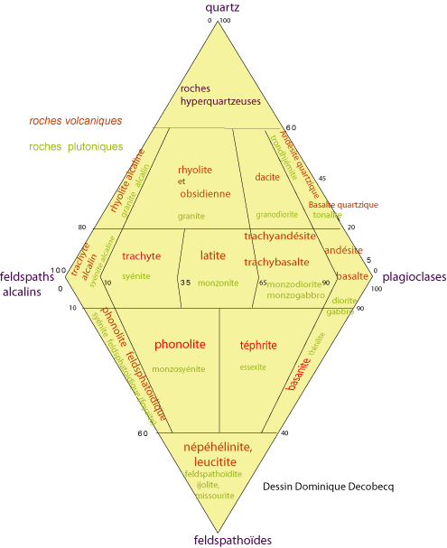
La classification du double triangle de Streckeisen
La classification du double triangle de Streckeisen est utilisée pour classer l’ensemble des roches magmatiques. Toutefois, elle est plus adaptée aux roches magmatiques acides et intermédiaires, c’est-à-dire aux roches plutôt leucocrates, donc claires.
Elle est fondée sur la proportion des trois familles de minéraux leucocrates essentiels dans ces roches. Il s’agit des feldspaths : A, les feldspaths alcalins (orthose potassique), et P, les plagioclases (feldspaths calco-sodiques) ; Q, le quartz pour les roches sursaturées en silice ; ou F, les feldspathoïdes, souvent abrégés « foid », pour les roches sous-saturées en silice.
Les minéraux ferromagnésiens sont généralement en faible proportion, de l’ordre de quelques dizaines de pourcents. La proportion de ces minéraux, généralement colorés, permet de définir l’indice de coloration (IC). En théorie, il est conseillé de ne pas utiliser cette classification lorsque l’IC dépasse 90 %. En pratique, elle est moins adaptée aux roches ayant un IC supérieur à 50–60 %. La case « anorthosite, diorite, gabbro » regroupe par exemple des roches dont l’indice de coloration peut être très variable. Une classification plus adaptée existe pour les roches ultrabasiques.
Feldspath Alcalin (A)
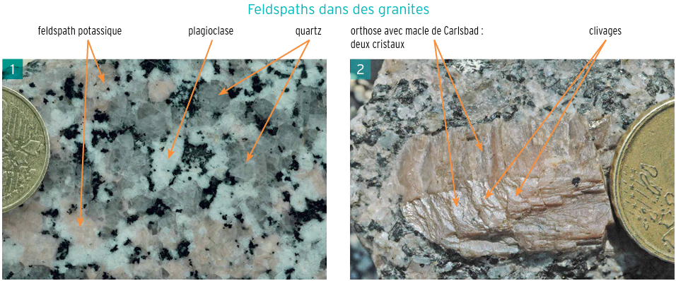
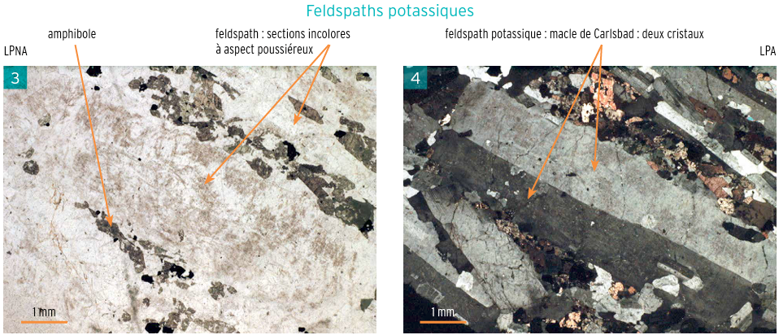
Le feldspath alcalin (ou potassique) est le pôle potassique des feldspaths. Il se forme dans un magma saturé en \(\mathrm{SiO_2}\) et plutôt riche en K.
Plagioclase (P)
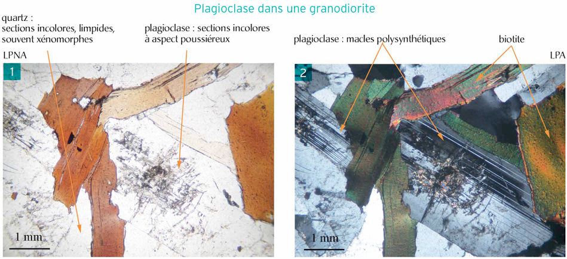
Le plagioclase est la solution solide Ca–Na des feldspaths. Il se forme dans un magma saturé en \(\mathrm{SiO_2}\) et plutôt riche en Ca et Na.
Quartz (Q)
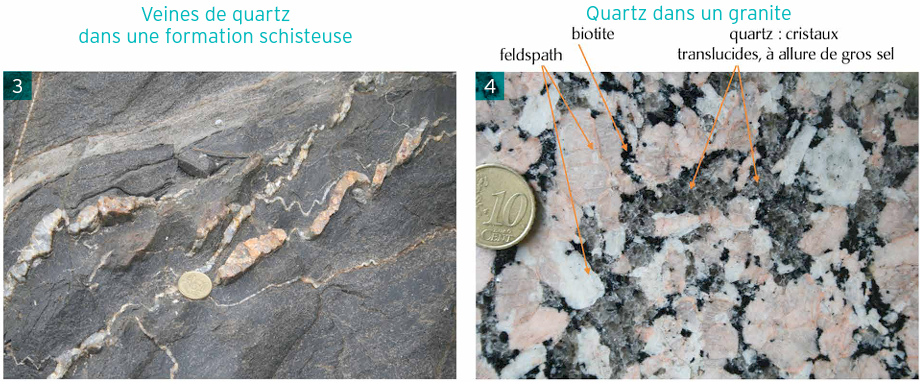
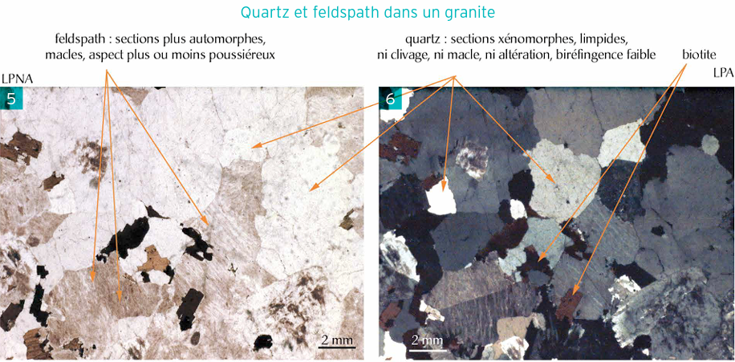
Le quartz (\(\mathrm{SiO_2}\)) se forme lorsque le magma est sursaturé en silice et doit former des minéraux constitués de silice pure.
Feldspathoïdes (F)
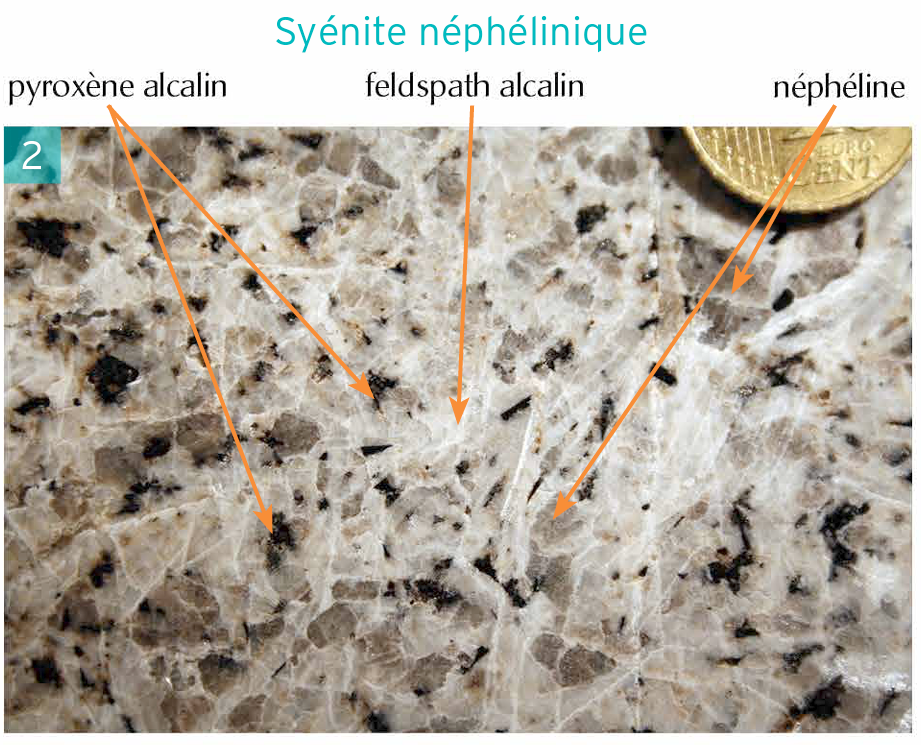
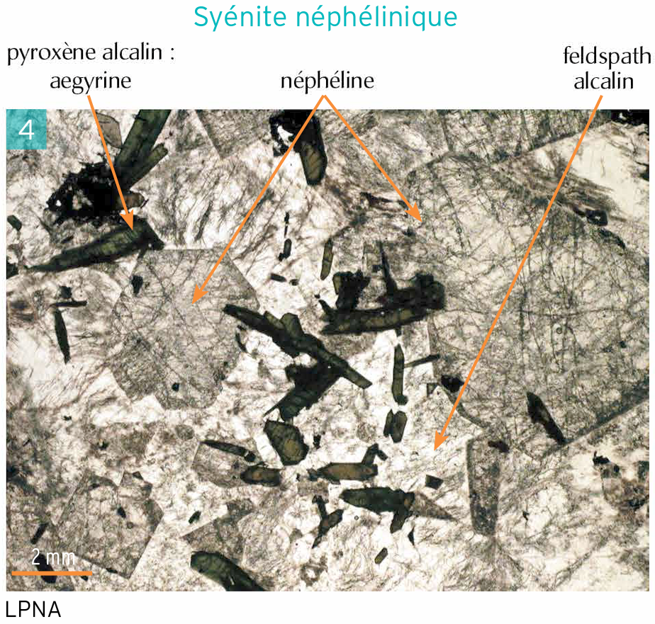
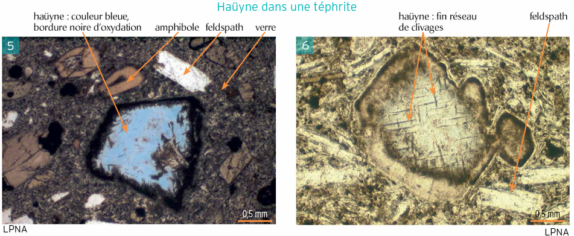
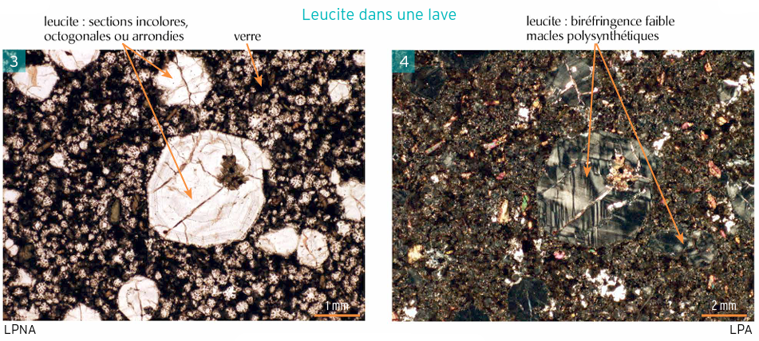
Les feldspathoïdes les plus courants sont la leucite, la néphéline et la haüyne. Ces cristaux se forment lorsque le magma est sous-saturé en silice ; ils présentent donc des proportions de Si relativement faibles.
Diagramme de Streckeisen : exemples de composition
Compositions modales hypothétiques des roches magmatiques
Chaque colonne représente une composition normalisée à 100 % pour les minéraux Q–A–P–F, hors minéraux ferromagnésiens. Le quartz et les feldspathoïdes ne coexistent pas : les échantillons A–D seront placés dans le triangle Q–A–P, les échantillons E–I dans le triangle F–A–P des deux diapositives suivantes.
Diagramme de Streckeisen : nomenclature plutonique
Classification modale QAPF des roches plutoniques
Le quartz et les feldspathoïdes ne coexistent pas : on utilise le triangle Q–A–P pour les roches à quartz, ou F–A–P pour les roches à feldspathoïdes. Les proportions sont normalisées à 100 % en excluant les minéraux ferromagnésiens. Les lettres A–D repèrent les compositions à quartz du tableau précédent ; les lettres E–I repèrent celles à feldspathoïdes. Les chiffres latéraux indiquent Q ou F (%), ceux de la base A/(A+P) (%).
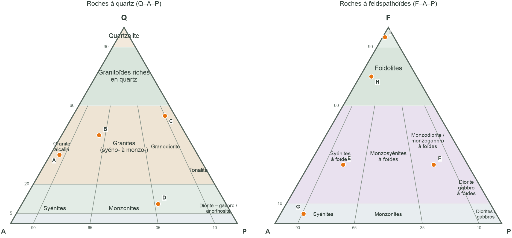
Diagramme de Streckeisen : nomenclature volcanique
Classification modale QAPF des roches volcaniques
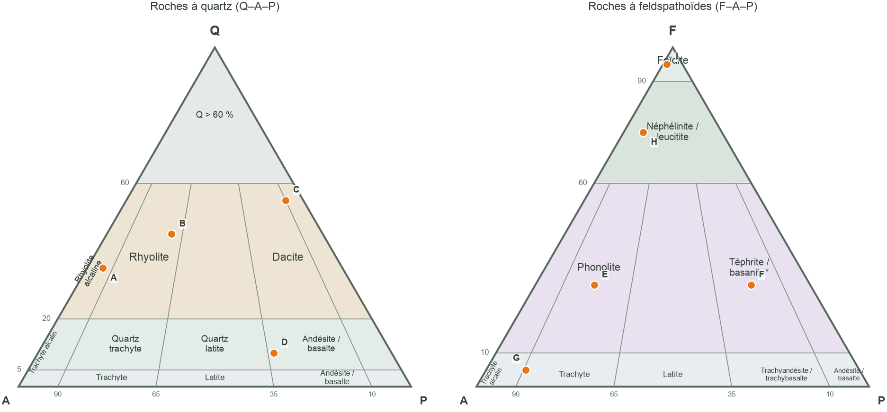
Composition modale des roches ultrabasiques
Cas spécifique des roches ultrabasiques mantelliques
Le diagramme de Streckeisen n’est pas adapté aux roches ultrabasiques du manteau, car elles ne sont pas composées de QAPF. Ce diagramme ternaire permet de les identifier grâce à la composition modale de l’olivine, de l’orthopyroxène et du clinopyroxène.
Olivine (Ol)
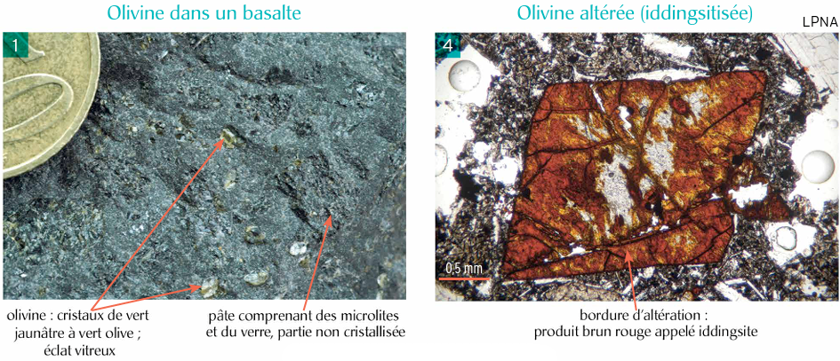
L’olivine ((Mg,Fe)₂SiO₄) se forme lorsque le magma est sous-saturé en silice et riche en magnésium et en fer.
Orthopyroxène (Opx) et clinopyroxène (Cpx)

- Structure et chimie : L’Opx est orthorhombique et pauvre en calcium (ex. : enstatite). Le Cpx est monoclinique (incliné) et intègre de gros cations comme le Ca (diopside, augite).
- Au microscope (LPA) : L’Opx présente une extinction droite, tandis que le Cpx montre une extinction oblique.
- À l’œil nu : la distinction est difficile dans une roche sombre. Le Cpx tend vers un vert bouteille brillant, alors que l’Opx est plus mat, brun ou vert très sombre.
Composition modale des roches ultrabasiques
Exemples de compositions modales
Les proportions sont normalisées à 100 % et réparties entre l’olivine (Ol), le clinopyroxène (Cpx) et l’orthopyroxène (Opx).
| Roche | Olivine (Ol) (%) | Clinopyroxène (Cpx) (%) | Orthopyroxène (Opx) (%) |
|---|---|---|---|
| Dunite | 90 | 5 | 5 |
| Wehrlite | 60 | 35 | 5 |
| Lherzolite | 60 | 20 | 20 |
| Harzburgite | 70 | 5 | 25 |
| Websterite | 5 | 48 | 47 |
Composition modale des roches ultrabasiques : nomenclature mantellique
Classification modale des roches mantelliques
Les proportions d’olivine (Ol), d’orthopyroxène (Opx) et de clinopyroxène (Cpx) sont normalisées à 100 %. À partir de 40 % d’olivine, on parle de péridotites ; sous 40 %, de pyroxénites. Les sous-champs dépendent ensuite du rapport entre Opx et Cpx.
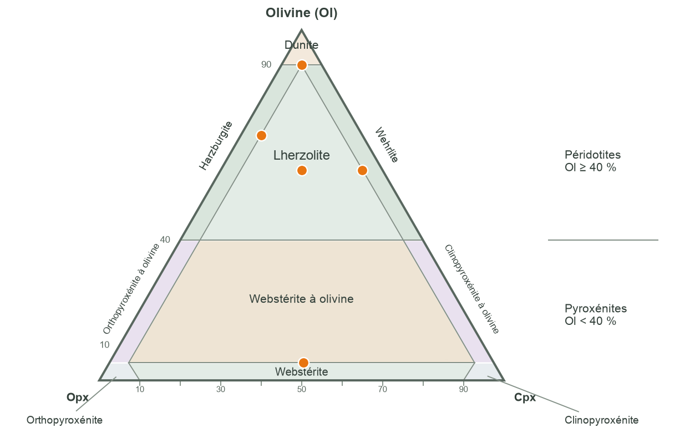
Classification modale simplifiée
Simplification possible avec ce type de diagramme
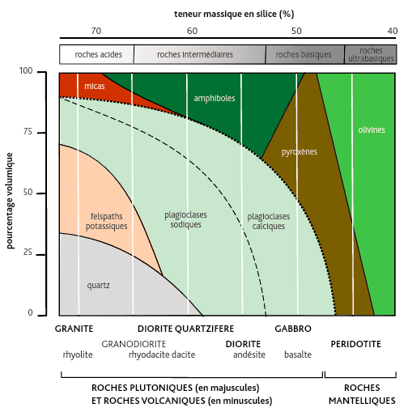
Amphiboles
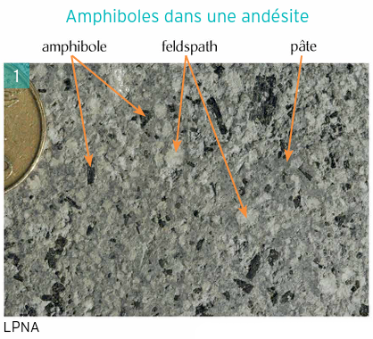
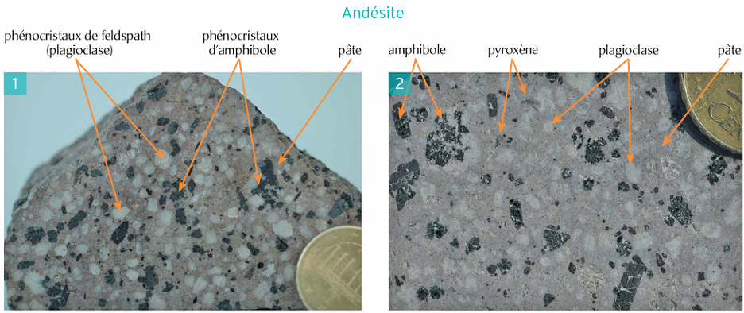
Les amphiboles sont des inosilicates hydratés, riches en groupes hydroxyle (OH), qui cristallisent dans des magmas relativement riches en eau, généralement à des températures plus basses que les pyroxènes. Elles sont fréquentes dans les andésites et dans les roches plutoniques intermédiaires à acides.
Micas (biotite et muscovite)
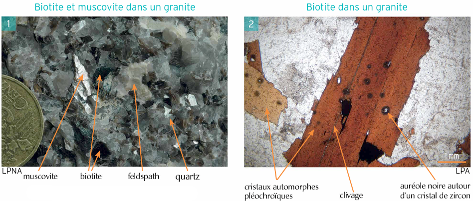
Les micas sont des phyllosilicates à structure en feuillets. La biotite est un mica ferromagnésien sombre, tandis que la muscovite est un mica clair riche en potassium et en aluminium. Ils cristallisent surtout dans des magmas évolués et relativement riches en eau.
Classification par composition chimique : le diagramme TAS (Total Alkali Silica)
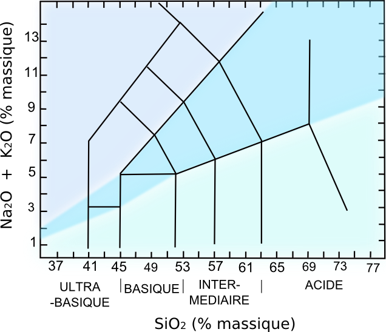
La classification des roches sur un diagramme TAS
Le diagramme TAS (pour Total Alkali Silica) permet de classer et de nommer les roches magmatiques volcaniques en fonction de leur composition chimique globale. Il est indispensable pour les roches à grains trop fins dans lesquelles les minéraux ne sont pas visibles à l’œil nu ni au microscope. On utilise alors une analyse chimique globale de la roche totale.
Les deux axes :
- Axe X : le taux de silice (\(\mathrm{SiO_2}\)), qui sépare les roches des plus basiques (pauvres en silice, par exemple le basalte) aux plus acides (riches en silice, par exemple la rhyolite).
- Axe Y (ordonnée) : le taux d’alcalins (\(\mathrm{Na_2O + K_2O}\)), c’est-à-dire la somme du sodium et du potassium.
Diagramme TAS : exemples de composition
Compositions chimiques de roches magmatiques
| Oxyde (% masse) |
A Basanite |
B Hawaiite |
C Basalte |
D Mugearite |
E Andésite |
F Phonolite |
G Dacite |
H Rhyolite |
|---|---|---|---|---|---|---|---|---|
| SiO₂ | 45.46 | 48.65 | 50.06 | 52.28 | 56.86 | 57.49 | 66.36 | 74.00 |
| TiO₂ | 2.56 | 3.30 | 1.86 | 2.11 | 0.88 | 0.64 | 0.58 | 0.27 |
| Al₂O₃ | 14.89 | 16.32 | 15.99 | 16.98 | 17.22 | 19.47 | 16.12 | 13.53 |
| Fe₂O₃ | 4.14 | 4.92 | 3.92 | 5.17 | 3.29 | 2.87 | 2.39 | 1.47 |
| FeO | 8.02 | 7.73 | 7.46 | 6.52 | 4.26 | 2.28 | 2.41 | 1.16 |
| MgO | 8.93 | 5.15 | 6.96 | 3.52 | 3.40 | 1.12 | 1.74 | 0.41 |
| CaO | 10.53 | 8.21 | 9.66 | 6.14 | 6.87 | 2.80 | 4.29 | 1.16 |
| Na₂O | 3.58 | 4.15 | 2.97 | 4.87 | 3.54 | 7.98 | 3.89 | 3.62 |
| K₂O | 1.88 | 1.58 | 1.12 | 2.46 | 1.67 | 5.38 | 2.22 | 4.38 |
| P₂O₅ | — | — | — | — | — | — | — | — |
| H₂O | — | — | — | — | — | — | — | — |
| Total* | 99.99 | 100.01 | 100.00 | 100.05 | 97.99 | 100.03 | 100.00 | 100.00 |
Le total est la somme des neuf oxydes chiffrés ci-dessus ; P₂O₅ et H₂O ne sont pas inclus. Pour tracer le TAS, SiO₂ et Na₂O + K₂O sont renormalisés sur ce sous-total anhydre.
Diagramme TAS : nomenclature plutonique
Classer les roches plutoniques par composition chimique
La classification de référence des roches plutoniques reste fondée sur la minéralogie (mêmes noms que sur le diagramme QAPF).
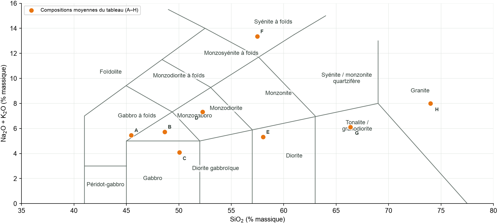
Champs du diagramme TAS avec nomenclature plutonique et compositions moyennes du tableau (A–H).
Quelques exemples représentatifs de roches plutoniques : gabbro
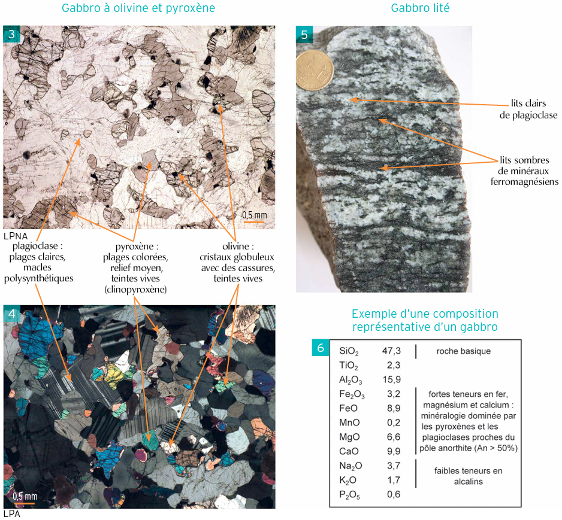
Quelques exemples représentatifs de roches plutoniques : granite
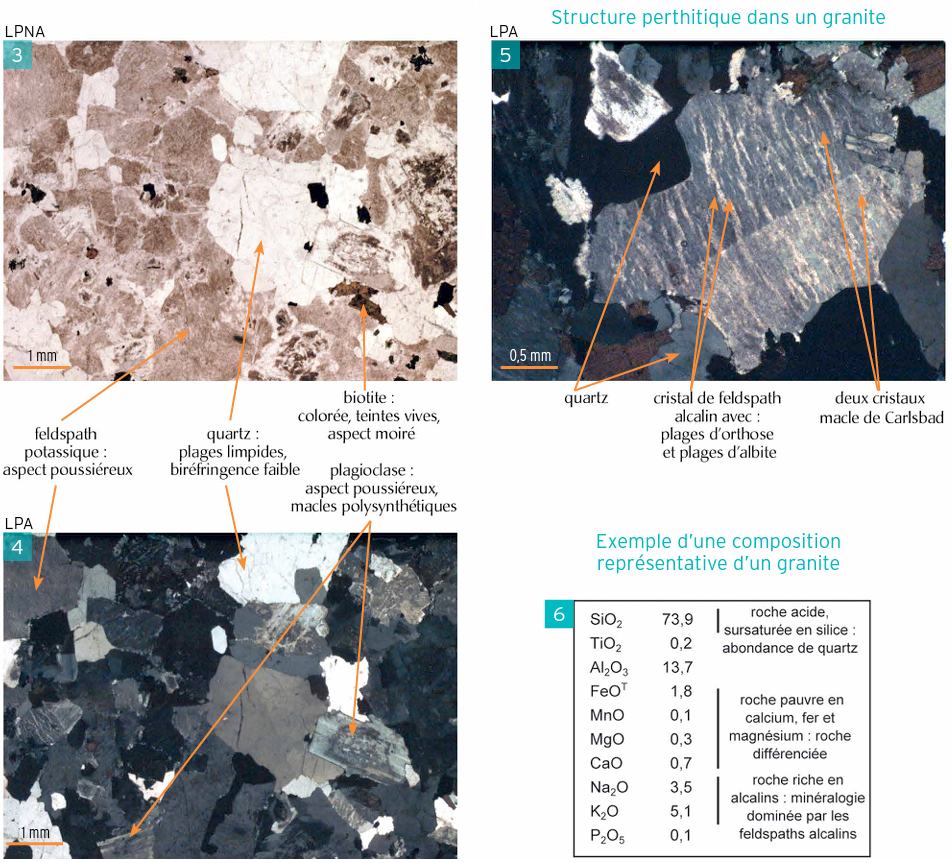
Quelques exemples représentatifs de roches plutoniques : granodiorite
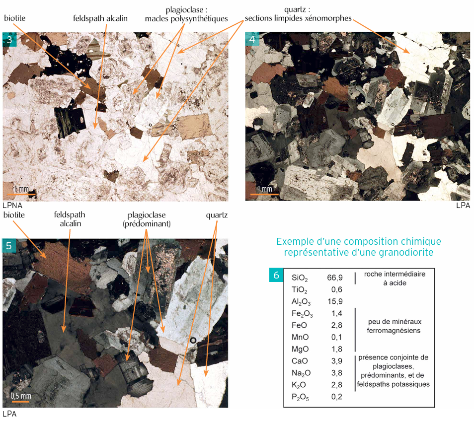
Quelques exemples représentatifs de roches plutoniques : syénite
Diagramme TAS : nomenclature volcanique
Classer les roches volcaniques par composition chimique
La classification de référence des roches volcaniques reste fondée sur la minéralogie (mêmes noms que sur le diagramme QAPF).
Champs de classification TAS et compositions moyennes de roches volcaniques (A–H).
Quelques exemples représentatifs de roches volcaniques : Andésite
Quelques exemples représentatifs de roches volcaniques : phonolite et téphrite
Quelques exemples représentatifs de roches volcaniques : rhyolite
Quelques exemples représentatifs de roches volcaniques : trachyte
Messages à retenir
On peut classer une roche selon quatre axes :
| Axe | Question |
|---|---|
| Contexte | mantellique, plutonique ou volcanique ? |
| Texture | taille, cristallinité, vésicularité ? |
| Minéralogie | quels minéraux principaux ? |
| Composition | mafique, intermédiaire, felsique, ultramafique ? |
On peut donc donner un nom de roche et une texture associée.
Exemples :
- Bombe (taille), basaltique (composition minéralogique et géochimique), aphyrique (type de cristaux) et scoriacée (type de vésicules).
- Granite (composition minéralogique et géochimique), à texture grenue (cristaux).
Note : Les roches mantelliques et plutoniques étant implicitement massives et denses, ces caractères ne sont généralement pas mentionnés. Seules les roches volcaniques peuvent être vésiculées ou se présenter sous forme de grains (projections), à l’exception des coulées de lave qui restent compactes.